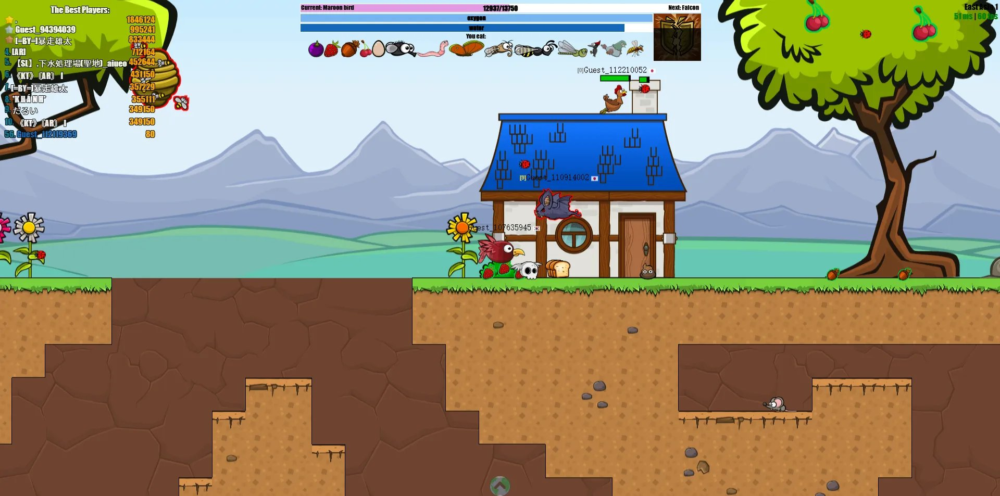
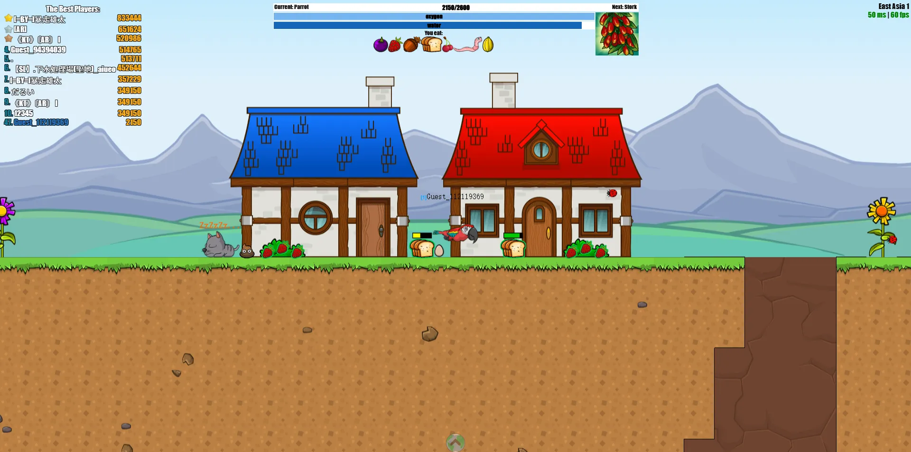

The Hard Truth About Your Evoworld.io Runs
You think you are ready to dominate the skies just because you clicked a few green pixels. You are completely wrong. I have watched thousands of players spawn as a fly and immediately die because they refuse to learn the actual rules of Evoworld.io. This is not a casual clicking game. It is a brutal, unforgiving ecosystem where every single second matters. You manage hunger, water, and oxygen while dodging apex predators. If you ignore the mechanics, you die. I am going to fix your terrible habits right now. Read this carefully, or go back to being permanent fly food.

| # | Mistake | Quick Fix |
|---|---|---|
| 1 | Ignoring the Oxygen and Water Meters | Monitor your hunger, water, and oxygen meters constantly |
| 2 | Triggering Abilities at the Wrong Time | Treat your special ability as a calculated tactical tool |
| 3 | Chasing Red Predators for XP | Respect the color coding |
| 4 | Ignoring Environmental Traps | Always know your creature's environmental weaknesses before you move |
| 5 | Evolving at the Worst Possible Time | Secure your surroundings before you evolve |
Ignoring the Oxygen and Water Meters
You sprint across the map chasing high-tier prey without checking your survival meters. You completely ignore your water and oxygen levels until they flash red. You think moving fast is the only priority. You let your oxygen deplete while diving into deep aquatic zones or let your water drop to zero while crossing dry land traps. You treat these meters like decorative UI elements instead of critical survival stats, blindly assuming you can just eat green food to fix everything.
When your oxygen or water hits zero, your creature dies instantly. It does not matter if you have a mountain of XP or if you are one bite away from evolving into a mythical beast. The game does not care about your progress. You will respawn as a tiny fly, losing all your hard-earned momentum. Dying to environmental depletion is the most embarrassing way to lose your streak, and it happens to impatient rookies every single match they play.
Monitor your hunger, water, and oxygen meters constantly. Before you dive into an aquatic zone or cross a dangerous land trap, ensure your oxygen and water are topped off. Stick near safe zones and water sources when you are low-level to maintain your vitals. If a meter drops below half, stop hunting and find a safe spot to replenish it immediately. Survival comes first, and evolution comes second. Never sacrifice your baseline vitals for a risky chase across the map.
Triggering Abilities at the Wrong Time
You mash the spacebar or click blindly the moment you see a red predator. You waste your unique creature ability on a full stomach just because you are panicked. You do not wait for the perfect moment to strike or escape. You treat your special skill like a panic button instead of a tactical tool. You burn your cooldown while running away from a bird, leaving you completely defenseless when a second predator ambushes you from the blind flank.
Every creature in Evoworld.io has a unique ability, and wasting it seals your fate. When you blow your cooldown early, you lose your only advantage against larger predators. You become a sitting duck. The predator catches you, eats you, and steals your hard-fought XP. You leave yourself with zero defensive options when the real threat arrives. A wasted ability is a wasted life, and it directly feeds the enemy's evolution progress while resetting yours to a pathetic little fly.
Treat your special ability as a calculated tactical tool. Wait until the predator is within striking distance before you use a dash or an attack. If you are fleeing, save your ability for the exact moment the enemy commits to a dive. Know your creature's specific skill inside and out. Practice the timing in safe zones before you engage in high-stakes fights. Patience wins games, and a perfectly timed ability turns a guaranteed death into a truly victorious counter-attack.

Chasing Red Predators for XP
You see a red predator and decide to fight it because you are greedy for experience points. You ignore the fundamental rule of the food chain. You think your newly evolved reptile form can take down a bird just because you feel confident. You chase predators that are clearly higher on the evolution ladder. You abandon the safe green food sources to hunt creatures that are literally designed to eat you. You let your ego override basic survival instincts, assuming you can outplay the system.
Red means danger, not a challenge. The game explicitly tells you to avoid predators. When you engage a higher-tier creature, you lose the fight nine times out of ten. They have better stats, faster movement, and stronger abilities. You die instantly, and the predator gains a massive XP boost from eating you. You literally feed your enemy while resetting your own progress. This arrogant playstyle guarantees you stay stuck in the lower evolution stages forever and ever.
Respect the color coding. Green is food, red is death. Stick to eating green food and hunting creatures that are smaller than you. If a red predator approaches, run immediately. Do not try to be a hero. Use the terrain, hide in safe zones, and wait for them to pass. Grind the easy XP until you naturally outclass the threats around you. True dominance comes from smart positioning and patience, not from picking fights you are mathematically guaranteed to lose.
Ignoring Environmental Traps
You fly or swim straight into water bodies and land traps without checking your current evolution stage. You assume the map is entirely open terrain. You forget that certain creatures cannot survive in specific environments. You chase a fleeing bug straight into a deep lake while you are a land-based insect. You ignore the environmental hazards that restrict your movement and survival. You treat the entire map like a flat playground instead of a complex, unforgiving ecosystem with strict biological boundaries.
Entering a trap you cannot survive causes instant environmental death. The game punishes you for ignoring your biological limitations. You drown in water or suffocate on land. This is a completely avoidable death that costs you all your accumulated progress. Worse, predators know these traps exist. They intentionally herd you toward water or land hazards, knowing you will panic and die to the environment. You hand them a free kill just by being careless with your basic movement.
Always know your creature's environmental weaknesses before you move. If you are a land animal, stay away from deep water. If you are an aquatic creature, do not beach yourself. Memorize the map layout and identify the traps early. When a predator chases you, use these traps to your advantage by leading them into hazards they cannot survive, while you safely navigate around them. Spatial awareness and biological knowledge keep you alive and help outsmart the enemy.
Evolving at the Worst Possible Time
You reach the required XP to evolve and immediately hit the evolution button in the middle of a chaotic battlefield. You do not look around. You do not check for nearby red predators. You just evolve because you can. You transform into a new creature while surrounded by enemies, completely vulnerable during the transition. You ignore the strategic timing of your evolution, treating it like a mindless reward instead of a critical tactical shift in the middle of a warzone.
Evolving takes a moment, and your new form might not be ready for the immediate threat. You could evolve into a powerful bird only to realize you spawned directly next to an apex predator that eats birds. You lose your safe positioning and expose your new, untested form to immediate danger. A bad evolution timing forces you to fight with a creature you do not understand, in a location you cannot defend. You throw away a truly perfect run.
Secure your surroundings before you evolve. When your XP bar fills, fly or run to a safe zone, a high vantage point, or a dense cluster of green food. Clear the area of red predators. Only trigger your evolution when you have the space to learn your new abilities and the safety to recover. Control the timing of your evolution to maximize your survivability and ensure your new form enters the food chain right at the top.
The Bottom Line
Evoworld.io is a ruthless test of patience, spatial awareness, and biological strategy. Stop acting like a mindless insect and start playing like an apex predator. Manage your oxygen, respect the red predators, avoid environmental traps, and time your evolutions perfectly. The game rewards the smart, not the reckless. Apply these fixes, respect the mechanics, and you will finally climb the evolution ladder instead of dying as permanent fly food. Now get out there and completely dominate the skies.